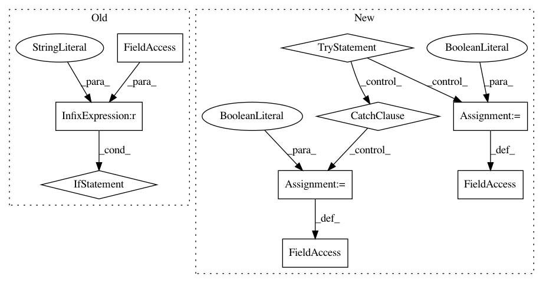

7d597de1db56929d5d3272bea94e6066a83a95c3,Software/Python/easysensors.py,,,#,1732
Before Change
// grove_rgb_lcd.setRGB(red,green,blue)
if __name__ == "__main__":
print("No default test")
After Change
print(in_str)
try:
from line_follower import line_sensor
from line_follower import scratch_line
// is_line_follower_accessible not really used, just in case
is_line_follower_accessible = True
except:
try:
sys.path.insert(0, "/home/pi/GoPiGo/Software/Python/line_follower")
import line_sensor
import scratch_line
is_line_follower_accessible = True
except:
is_line_follower_accessible = False
//////////////////////////////////////////////////////////////////////////////////////////////////////////////////////////
// SENSORS
//////////////////////////////////////////////////////////////////////////////////////////////////////////////////////////
class Sensor(object):
Base class for all sensors. Can only be instantiated through the use of an :py:class:`~easygopigo3.EasyGoPiGo3` object.
In pattern: SUPERPATTERN
Frequency: 4
Non-data size: 9
Instances
Project Name: DexterInd/GoPiGo3
Commit Name: 7d597de1db56929d5d3272bea94e6066a83a95c3
Time: 2018-03-02
Author: cleoqc1124@gmail.com
File Name: Software/Python/easysensors.py
Class Name:
Method Name:
Project Name: ilastik/ilastik
Commit Name: 31be93ffb4abba92ada7a511a7cd7031df42279c
Time: 2013-12-12
Author: bergs@janelia.hhmi.org
File Name: tests/testOpExportSlot.py
Class Name:
Method Name:
Project Name: biocore/scikit-bio
Commit Name: 41c4cb9b103801ee0d2cc610d7a332dda4d635cd
Time: 2016-02-17
Author: jai.rideout@gmail.com
File Name: skbio/io/tests/test_util.py
Class Name:
Method Name:
Project Name: ilastik/ilastik
Commit Name: 6ceb6c78418b099238edf5300706fa683bccbb10
Time: 2013-06-12
Author: webmaster@burgerdev.de
File Name: tests/testOpInterpMissingData.py
Class Name:
Method Name: